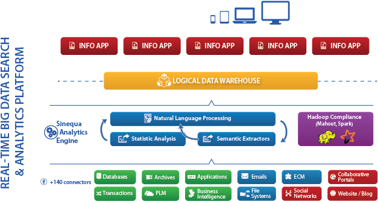

Cybersecurity

What does it do?
Cybersecurity is the term used for reducing the risk of access to digital systems over the internet*. It involves encrypting the signals sent over the internet*, creating systems that are harder to access for unauthorised individuals, as well as more difficult to automate attempts to access (cryptography). In this way, it secures data at three points - the end user's machine, the server sending the data, and the infrastructure that transmits it.
What is the likely impact?
Enter impacts here
How will this affect you?
Enter Effects here
Machine Learning
What does it do?
Machine learning is artificial intelligence, wherein massive amounts of data are compared to create probabilities, used in or as decision making. specific techniques artificial general intelligence neural networks statistical analysis gpt-3 statistical analyses based on human text - terabytes of it - and then trains itself based on statistical frequencies to produce human like deep learning is where the computer does the learning - nobody is guiding it, or programming. from the training set - artificial neural networks - real world data, and from that it produces an output - either a prediction or clarification supervised, semi-supervise and unsupervised gets given a data set, and by using some sort of feedback loops, it is able to set up connections that model the data supervised training set is one which the models for success are manually applied by the operator or programmer
What is the likely impact?
Enter Impact Here
How will this affect you?
Enter efect here
Natural Language Processing
What does it do?
gpt-3 is an example of natural language processing siri, alexa, these are trained to receive and convert into data natural language processing (human language) chatbots vs formal languages
What is the likely impact?
Enter Impact Here
How will this affect you?
Enter efect here
RaspberryPi
What does it do?
gpt-3 is an example of natural language processing siri, alexa, these are trained to receive and convert into data natural language processing (human language) chatbots vs formal languages
Natural Language processing
Enter Impact Here
How will this affect you?
Enter efect here
[1]Economics, F., 1, E. and growth, H., 2020. House Prices Outpacing Income Growth. [online] Faculty of Business and Economics. Available at:
https://fbe.unimelb.edu.au/exchange/edition1/house-prices-outpacing-income-growth
[Accessed 17 September 2020].
[2]Consumer.vic.gov.au. 2020. Property Data. [online] Available at:
https://www.consumer.vic.gov.au/housing/buying-and-selling-property/property-data
[Accessed 16 September 2020].
[3]ArcGIS for Developers. 2020. Get Started | Arcgis For Developers. [online] Available at:
https://developers.arcgis.com/labs/?product=python&topic=any
[Accessed 16 September 2020].
[4]Real Institute of Victoria. 2020. REIV Propertydata. [online] Available at:
https://reiv.com.au/about-us/propertydata
[Accessed 16 September 2020].
[5]Scikit-learn.org. 2020. Scikit-Learn: Machine Learning In Python — Scikit-Learn 0.23.2 Documentation. [online] Available at:
https://scikit-learn.org/stable/
[Accessed 20 September 2020].